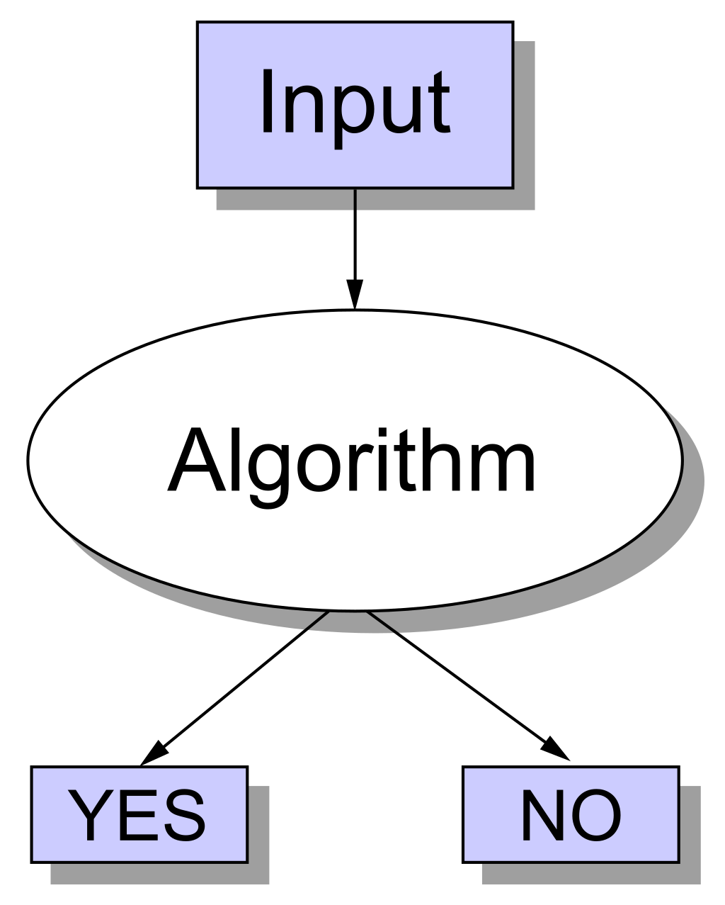

NP, P, NP-complete and NP-Hard
To solve the problem of NP-completeness. Firstly, we need to figure out what is NP, P, NP-complete and NP-Hard.
P
P is set of problems that can be solved by a deterministic Turing machine in Polynomial time.
NP
NP is set of decision problems that can be solved by a Non-deterministic Turing Machine in Polynomial time. P is subset of NP (any problem that can be solved by deterministic machine in polynomial time can also be solved by non-deterministic machine in polynomial time).
Informally, NP is set of decision problems (a problem that can be posed as a yes-no question of the input values) which can be solved by a polynomial time via a “Lucky Algorithm”, a magical algorithm that always makes a right guess among the given set of choices.

NP-complete
A decision problem L is NP-complete if:
- L is in NP (Any given solution for NP-complete problems can be verified quickly, but there is no efficient known solution).
- Every problem in NP is reducible to L in polynomial time (Reduction is defined below).
NP-Hard
A problem is NP-Hard if it follows property 2 mentioned above, doesn’t need to follow property 1. Therefore, NP-Complete set is also a subset of NP-Hard set.
The prove of NP-complete
From the definition of NP-complete, it appears impossible to prove that a problem L is NP-Complete. By definition, it requires us to that show every problem in NP is polynomial time reducible to L.
Fortunately, there is an alternate way to prove it. The idea is to take a known NP-Complete problem and reduce it to L. If polynomial time reduction is possible, we can prove that L is NP-Complete by transitivity of reduction (If a NP-Complete problem is reducible to L in polynomial time, then all problems are reducible to L in polynomial time). So, we need to know the first problem solved as NP-complete.
Boolean satisfiability problem
Boolean satisfiability problem (sometimes called propositional satisfiability problem and abbreviated SATISFIABILITY or SAT) is the problem of determining if there exists an interpretation that satisfies a given Boolean formula. In other words, it asks whether the variables of a given Boolean formula can be consistently replaced by the values TRUE or FALSE in such a way that the formula evaluates to TRUE. If this is the case, the formula is called satisfiable. On the other hand, if no such assignment exists, the function expressed by the formula is FALSE for all possible variable assignments and the formula is unsatisfiable. For example, the formula “a AND NOT b” is satisfiable because one can find the values a = TRUE and b = FALSE, which make (a AND NOT b) = TRUE. In contrast, “a AND NOT a” is unsatisfiable.
SAT is the first problem that was proven to be NP-complete. This means that all problems in the complexity class NP, which includes a wide range of natural decision and optimization problems, are at most as difficult to solve as SAT. There is no known algorithm that efficiently solves each SAT problem, and it is generally believed that no such algorithm exists; yet this belief has not been proven mathematically, and resolving the question of whether SAT has a polynomial-time algorithm is equivalent to the P versus NP problem, which is a famous open problem in the theory of computing.
Unrestricted satisfiability (SAT)
The proof shows how every decision problem in the complexity class NP can be reduced to the SAT problem for CNF formulas, sometimes called CNFSAT. A useful property of Cook’s reduction is that it preserves the number of accepting answers. For example, deciding whether a given graph has a 3-coloring is another problem in NP; if a graph has 17 valid 3-colorings, the SAT formula produced by the Cook–Levin reduction will have 17 satisfying assignments.
NP-completeness only refers to the run-time of the worst case instances. Many of the instances that occur in practical applications can be solved much more quickly. See Algorithms for solving SAT below.
SAT is trivial if the formulas are restricted to those in disjunctive normal form, that is, they are disjunction of conjunctions of literals. Such a formula is indeed satisfiable if and only if at least one of its conjunctions is satisfiable, and a conjunction is satisfiable if and only if it does not contain both x and NOT x for some variable x. This can be checked in linear time. Furthermore, if they are restricted to being in full disjunctive normal form, in which every variable appears exactly once in every conjunction, they can be checked in constant time (each conjunction represents one satisfying assignment). But it can take exponential time and space to convert a general SAT problem to disjunctive normal form; for an example exchange $\vee$ and $\wedge$ in the above exponential blow-up example for conjunctive normal forms.